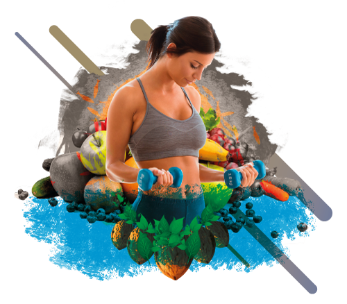

Kaizen es una palabra japonesa que se compone de dos sinogramas de escritura japonesa que significan “bueno” y “cambio”, y actualmente, Kaizen se refiere a un sistema de mejora continua en el que las pequeñas, pero constantes mejoras, acumulan tras de sí grandes beneficios a largo plazo.
Kaizen como filosofia de vida
En nuestra seccion de entrenaminetos encontraras rutinas (con su respectiva escala de progreso) segun en el nivel que estes, tambien veras diferentes formatos de entrenamineto como calistenia, funcional y demas

Dentro de nuestra seccion de Alimentacion podras aprender a calcular tu gasto calorico a travez de harris benedi y asi armar tu plan de nutricion con chat gpt, tambien encontraras tip para cocinar diferentes platos y info sobre nutricion variada
Quien domina sus habitos controlara su vida, en esta seccion encontraras informacion sobre diferentes habitos para reprogramar tu vida